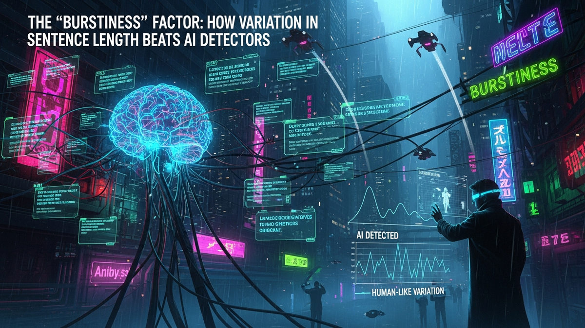

Alright, let's cut the crap. You've heard the noise about AI detectors. Tools that claim they can "sniff out" AI-generated text with 99% accuracy. They're being used by schools, by editors, and even by search engines. Most of it is snake oil, but they all share one weakness. They aren't reading for meaning; they're scanning for mathematical patterns. And large language models (LLMs) like GPT-4 leave behind a very specific, very lazy fingerprint.
For 15 years, I've been in the trenches of IT and cybersecurity. My job is to understand systems, find their weaknesses, and exploit or patch them. AI detectors are just another system. Their primary weakness isn't vocabulary or grammar—it's rhythm. They are designed to catch the metronome, not the jazz drummer. AI writes like a metronome: a steady, predictable, and soul-crushingly uniform beat.
Humans don't write that way. We write with "burstiness." We throw out a short, sharp sentence. Bam. Then we might follow it with a long, winding thought that connects multiple ideas, using commas and clauses to string the reader along before we finally land the point. This guide is your playbook for learning how to write like a human again. It's not about "tricking" a system; it's about breaking the robotic habits AI has taught us and, in the process, making your writing more engaging and utterly invisible to any detector.
Let's get technical, but without the PhD-level nonsense. In linguistics and data science, "burstiness" refers to the phenomenon where events or items appear in sudden clusters, or bursts. Think of a popcorn machine. You get nothing for a minute, then POP-POP... POP... POP-POP-POP-POP. That's bursty. A dripping faucet, on the other hand, is not. Drip... drip... drip. It's predictable. It's uniform. It's boring.
AI-generated text is the dripping faucet. Human text is the popcorn. AI detectors are basically just sophisticated drip-counters. They analyze your writing on two key metrics that relate to this: Perplexity and Burstiness. Perplexity measures how surprised a model is by the next word in a sentence. AI text has low perplexity because it always chooses the most statistically probable, safest word. It's predictable. Human writing uses unexpected words, idioms, and analogies, creating high perplexity.
Burstiness is the structural cousin of perplexity. It measures the variation in sentence length. An AI model, trained on trillions of data points, tends to regress to the mean. It produces sentences that are consistently in the 15-25 word range. It loves perfect, grammatically sound, but rhythmically monotonous sentences. Why? Because its core goal is to generate clear, coherent text by predicting the next most likely word. This process naturally smooths out the extremes. It avoids very short, fragmented sentences and shies away from long, Faulkner-esque monstrosities. The result is a text where the standard deviation of sentence length is incredibly low. A detector sees this flat line and screams "AI!"
A human writer, however, is all over the place. We write for effect. We use a three-word sentence for impact. Then we'll write a 40-word sentence to explain a complex nuance, linking ideas with semicolons and em-dashes. This creates a jagged, spiky graph of sentence length. That's burstiness. The detectors see this chaos, this unpredictable rhythm, and their algorithms often classify it as human because their models are trained on the AI's tell-tale uniformity. They're not built to understand style; they're built to spot a mathematical anomaly, and in the world of writing, the AI is the anomaly.
If you want to spot an enemy, you need to know their tactics. The same goes for AI-generated text. It has "tells"—giveaways that are as obvious as a novice poker player's twitch. Once you see them, you can't unsee them. And the biggest tell is its obsession with a clean, unvaried sentence structure that it repeats over and over again. It's a machine, and it defaults to the most efficient, logical path.
The most common AI pattern is the relentless use of the "Subject-Verb-Object" structure, often initiated by a transition word. Look at this example: "Consequently, the company implemented a new security protocol. Furthermore, employees were required to attend mandatory training sessions. In addition, the IT department monitored the network for any suspicious activity." Notice the rhythm? Transition word, subject, verb, object. It's a march. A death march of clarity without a shred of style. A human might write: "The security breach forced the company's hand. Suddenly, new protocols were everywhere and training sessions became mandatory. The IT crew, meanwhile, watched the network like hawks." See the difference? The ideas are the same, but the rhythm is alive.
Another dead giveaway is the overuse of what I call "connector clutter." Words like 'moreover,' 'furthermore,' 'in addition,' 'therefore,' and 'consequently' are used by AIs as logical glue. Humans use them, but sparingly. AI uses them as a crutch to link every single sentence to the one before it, creating a text that feels like a legal document. It lacks flow because it's explicitly stating every logical connection instead of letting the reader infer them. It's the writing equivalent of a person who says "And then... and then... and then..."
Finally, AI writing has no real voice. It can't tell a personal story, use a genuine anecdote, or ask a truly provocative rhetorical question. It can fake it, but it feels hollow. It presents information. It does not share perspective. It will say, "It is important to consider the psychological impact," instead of, "But how does that actually make you feel?" This lack of personal pronouns, opinions, and conversational elements creates a sterile, encyclopedic tone that, when combined with the uniform sentence length, is painfully easy for a statistical model to flag.
💡 Expert IT Tip: Use a simple tool to visualize this problem. Don't pay for anything fancy. Copy your text and paste it into the free version of the Hemingway App. It highlights long sentences, but more importantly, it forces you to *see* your text as a collection of sentences. If you see a wall of paragraphs where every single sentence is highlighted yellow for being 'hard to read' (i.e., long), or none are, you have a burstiness problem. A human-written text should look like a patchwork quilt of colors and lengths.
Okay, enough theory. Let's get our hands dirty. This is the practical, step-by-step process for taking a piece of text and deliberately injecting the human element of burstiness. At first, this will feel mechanical. That's fine. Do it consciously long enough, and it will become an intuitive part of your writing process. The goal is to create a varied, dynamic rhythm that keeps both the reader and the AI detectors engaged and guessing.
The core technique is a simple four-part combo I call "Jab, Cross, Hook, Uppercut." Think of it like a boxer's combination. You vary your attacks to be effective.
Humanize your text and bypass any AI detector instantly with Undetectable AI.
BYPASS AI DETECTION NOWLet's see it in action. Here's a robotic paragraph: "AI detection software is becoming increasingly prevalent. This software analyzes text for specific patterns. These patterns are often indicative of machine generation, such as uniform sentence length."
Now, let's apply the combo: "The bots are watching. (Jab) They use sophisticated detection software that meticulously scans your writing not for what you say, but for how you say it—hunting for the subtle, rhythmic giveaways that scream 'machine-generated,' like the dead-flat pulse of uniform sentence length. (Cross) It's a simple, mathematical trap for unwary writers. (Hook) How do you avoid it? (Uppercut)" The second version is not only more engaging, but its sentence length graph is a jagged mess. It's human. It's bursty. That's the entire game.
While sentence length variation is the sledgehammer in your toolkit, don't forget the scalpel: word choice. This ties back to that concept of perplexity. AI models are giant prediction engines. When writing, they choose the word that is, statistically, the most boring and expected follow-up to the previous words. They live in the land of the cliché and the common denominator. Humans, on the other hand, are weird. We use slang, create metaphors, and pick slightly odd but more descriptive words.
Your job is to increase the perplexity of your text. Stop using AI crutch words. If you see words like "utilize," "leverage," "delve," "showcase," or "seamless" in your writing, delete them with extreme prejudice. These are corporate-speak words that AIs love because they appear frequently in their training data. Replace "utilize" with "use." Replace "leverage" with "use." See a pattern? Be direct. Be simple.
Next, embrace analogies and metaphors. An AI might say, "The server was experiencing high traffic." A human sysadmin would say, "The server was getting hammered," or "It was like trying to force a fire hose through a garden hose." Analogies are a hallmark of human cognition—we explain a new concept by relating it to an old one. AIs are getting better at generating them, but they often feel forced or slightly "off." Weaving your own authentic analogies into your text is a powerful human signal. It shows you're not just processing data; you're creating meaning.
Finally, vary your vocabulary, but do it intelligently. Don't just right-click and find a synonym. That's a classic amateur move. Understand the nuance. Instead of saying something was "good" four times, describe *how* it was good. Was it "effective," "efficient," "robust," or "elegant"? Each word carries a different shade of meaning. An AI might just swap them randomly, but a human writer chooses the precise word for the job. This thoughtful, specific word choice makes the text less predictable and therefore harder for a model to pin down as its own creation.
💡 Expert IT Tip: Use a "reverse dictionary" like OneLook. Instead of putting in a word to get a definition, you type in a concept or phrase, and it gives you a list of related words. For instance, if you type "a feeling of unease about the future," it might suggest "trepidation," "apprehension," or "foreboding." This is a fantastic way to break out of your vocabulary ruts and find the perfect, high-perplexity word that an AI would never think to use.
You've rewritten your text. You've injected burstiness, varied your word choice, and added your own voice. How do you know if you've succeeded? You need a verification process. Relying on your gut is a good start, but having a few concrete checks will confirm your work. This isn't about aiming for a "100% Human" score on some garbage online detector; it's about building the skills to consistently produce writing that doesn't fit the robotic mold.
Your first and most important tool is your own voice. Read your writing out loud. I'm serious. Put on headphones if you're in an office, but speak the words. Do you sound like a person having a conversation, or do you sound like a text-to-speech robot from 2005? You will immediately hear the monotony. You'll notice where the rhythm is flat and where you've used the same sentence structure three times in a row. If it sounds boring and robotic to you, it will read as boring and robotic to a detector's algorithm.
Second, go back to the visual tools. Use the Hemingway App or a similar text analyzer. Your goal is not to eliminate all complex sentences. On the contrary, your goal is to create a visual mess. You want to see a mix of short, un-highlighted sentences, some medium ones, and a few long, "very hard to read" sentences. A sea of uniform color is a massive red flag. A vibrant, varied patchwork is the sign of a human hand at work. You can even manually calculate the length of each sentence and put it in a spreadsheet to see the standard deviation if you really want to get nerdy, but a quick visual check is usually enough.
Finally, you can use the AI detectors themselves as a sparring partner. Use a tool like GPTZero or Originality.ai, but take their results with a huge grain of salt. These tools are notoriously unreliable and prone to false positives, especially on technical or academic writing. Don't treat their score as gospel. Instead, use them as a diagnostic tool. If it flags your entire document as "AI-written," you know you have a core structural problem. More usefully, many of them will highlight the specific sentences that seem most robotic. Look at those sentences. I'll bet you a rack of servers they are medium-length, use predictable vocabulary, and are surrounded by other sentences of similar length. The detector isn't telling you it's AI; it's telling you "this part is boring and predictable." That's actionable feedback. Use it to break up that specific section, then run it again.
Let's bring this home. The fight against AI detection isn't about finding a magic software hack or a prompt that will fool the system. The system is designed to spot patterns, and the easiest pattern to spot is the soulless, uniform rhythm of machine-generated text. The solution, therefore, is to be intentionally and gloriously un-patterned. It's about being human.
Embracing burstiness is the key. Mix your sentence lengths like a DJ mixes beats. Use short, sharp jabs to make a point and long, winding sentences to explore complexity. Ditch the robotic transition words and use analogies that are uniquely yours. Read your work aloud to hear its rhythm. If it sounds like a machine, it will read like one.
This isn't just about evasion. This process will make you a better, more engaging, and more persuasive writer. You're not just learning to beat a bot; you're learning the fundamentals of style and voice. In an age where automated, mediocre content is flooding the internet, the ability to write with authentic human flair is the ultimate skill. So stop writing like a metronome. Be the jazz drummer. The chaos is the point.
Don't wait for the headlines. Our Private Telegram Channel delivers real-time AI security updates and digital wealth strategies before they go viral. Stay protected. Stay ahead.
⚡ JOIN THE 1% NOWNo sign-up required. Instantly check risks, analyze AI text, or calculate your digital finances.